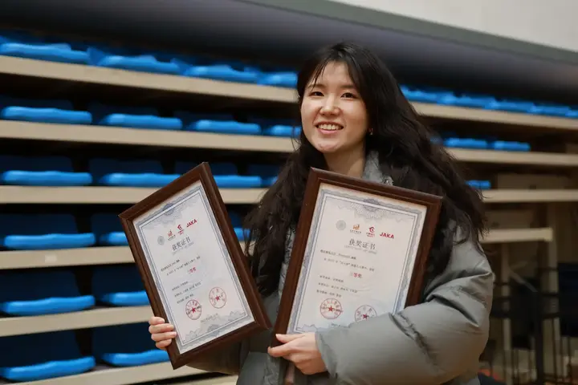
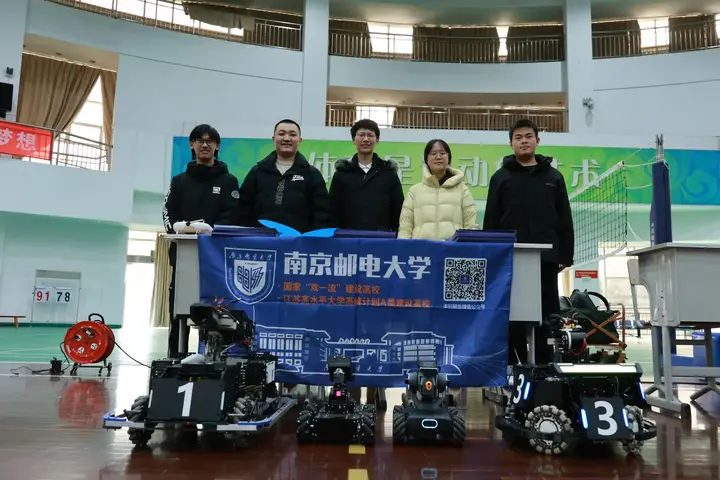
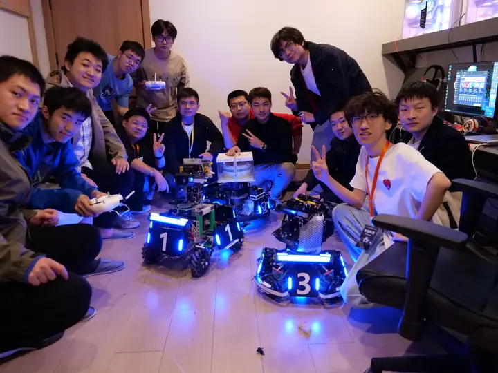

名人堂
这里记录两件事：我们拿过的成绩，以及把成绩做出来的人。 一块记分牌背后，是无数个在机房里熬过的夜晚。
01 — 荣誉墙
每一块奖牌
每一块奖牌
都有具体的日期
从第一次站上联盟赛赛场，到首次拿到季军。 我们更愿意记住过程，但也不会忘记结果。
荣誉记录整理中。
02 — 成员档案
把他们
把他们
写进档案
按赛季归档的队员名录。每一位参与过设计、装配、调试、 拍摄与赛事运营的成员，都在这份名单里。
Archive
档案正在整理中
队员名录由战队自行维护。管理员可在 图片管理后台 · 成员档案 中录入姓名、赛季、方向与一句话介绍，保存后会立即出现在这里。
这份名录正在整理中。等档案正式公开，你就能在这里看到每一位 参与过设计、装配、调试与赛事运营的队员。



Legacy
离开的人，
留下的是方法
一支学生战队的寿命由学制决定。四年之后，写代码的人会毕业， 但设计规范、调试文档、踩过的坑与修好的结构会留下来。
所以我们把「带训」写进了战队的日常：老队员必须把 做过的方案整理成能被下一个人接手的文档。 名人堂记录的是名字，真正被传承的是这些方法与经验。
设计评审文档沉淀老带新赛季复盘